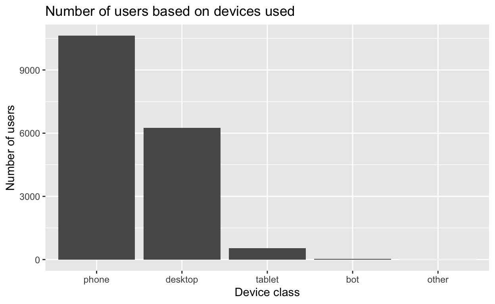
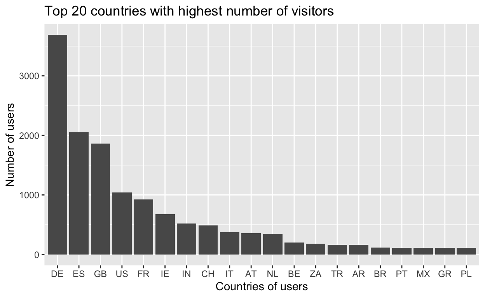
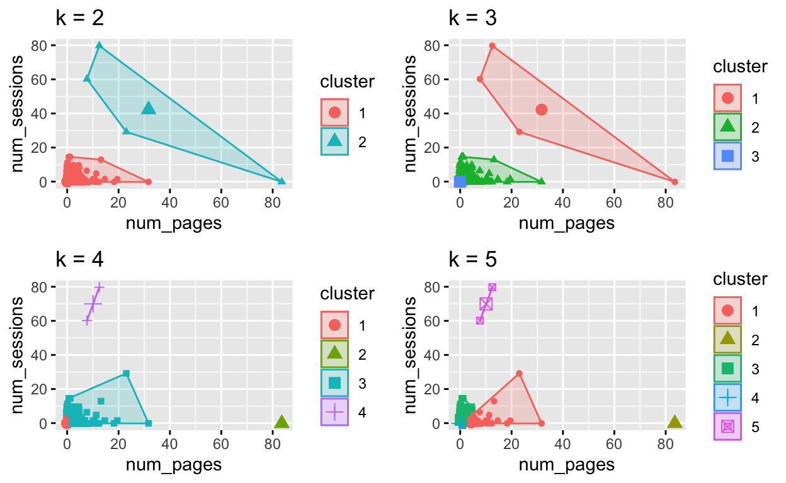

This post discusses identifying and analyzing KPIs for products as well as undertaking A/B testing to make recommendations to the products team. The post is an end-to-end project that demonstrates how to support product development with statistical analysis.
Almost all businesses exist to solve problems and their solutions are regarded as products offered to clients and customers. The success of a business at least financially is thus dependent on the product. That does not necessarily mean that are businesses failed because their product was not great. A great product can fail to deliver for a firm because it was not monitored and better positioned to be received in the market or it has not been innovated overtime to response to market and user dynamics. This is where product performance monitoring and analytics come to play. The pending failure of a product can only be predicted if proper records exists and the right indicators are set to measure its performance.
Key Performance Indicators (KPIs) are design to monitor business goals and objectives and in this case product goals. By this, there is the need to first set business goals or objectives that need to be achieved and based on that, various KPIs are designed to comprehensively achieve them. The type of KPI that a business uses depends on the industry and the product it is offering to end-users. Thus, selection of a good KPI is informed by a clear undertstanding of the product to be analyzed.
For this case study, the analysis is for an online accommodation booking firm. The product is an online booking platform where users can search for accommodation, select a number of features such as location, number of booking days among others. A number of KPI can be proposed for the product team to be monitored for analysis. These are as follows;
I. Conversion rate:
This should be defined to be purchase oriented. That is, a conversion is defined to have occurred when a visitor successfully book an apartment on Homelike webpage. The conversion rate will be the total bookings successfully requested divided by total number of sessions and then multiply the result by 100%. The rational behind recommending this KPI is to enable the product team assess the monetary value contribution of their product to the company as this is likely the primary means of achieving financial viability of Homelike. More importantly, conversion rate is likely to have a positive relationship with sales hence this KPI will enable the monitoring of our first business goal.
II. Customer acquisition:
Customer acquisition is one of the key indicators for measuring market outreach which is related to sales. For Homelike, customers can be conceptualized to be online visitors who register on the platform in hopes of using the platform to book an apartment. Therefore, customer acquisition can be monitored using the number of people who register on the platform.
III. Total number of unique visitors: The number of visitors who access Homelike page will provide clues to its web traffic which has the potential of translating into sales. This KPI is also a measure for monitoring marketing efforts and popularity of the products
IV. Average session per User: Average sessions per user helps monitor web traffic flow and a high average session per user indicates that several visitors are requesting multiple sessions hence continue to use our product overtime.
V. Bounce rate: Bounce rate indicates single page view without further interaction with the product and this KPI should be monitored to keep it to the minimum possible. Bounce rate is likely to be negatively correlated with revenue and indicative of the user experience of the products.
The analysis of the data was undertaken using R programming and Rstudio and several other packages.
In order to estimate conversion rate, there is the need to define what is regarded as conversion for our products. After studying the dataset and trying to make meaning of the variables, I concluded that conversion is said to have occured when page_type == request/success. This means that a visitors request for booking an apartment has been successful hence shown the request/success webpage.
The day chosen for the analysis is 2021-07-18 hence the corresponding dataset bq-results-20210718.csv. The code for the analysis is provided below. First all packages are load and the data is clean and transformed for the analysis.
library(readr)
library(tidyverse) # data manipulation and visualization
library(ggplot2)
library(GGally)
library(ggstatsplot)
library(plotly)
library(highcharter)
library(cluster) ### working with clusters
library(factoextra) ## cal and visualizing clusters
library(gridExtra) ## plotting multiple graphs
library(DT)
library(stringr)
library(stringi)
library(modelr) # provides easy pipeline modeling functions
library(broom) # helps to tidy up model outputs
library(car) ## for regression
library(haven)
library(caret)
library(h2o)
library(rsample)Now the datasets are loaded. I achieved this using the code below;
bq_results_20210718 <- read_csv("bq-results-20210718.csv")
bq_results_20210717 <- read_csv("bq-results-20210717.csv")
bq_results_20210716 <- read_csv("bq-results-20210716.csv")
bq_results_20210715 <- read_csv("bq-results-20210715.csv")
bq_results_20210714 <- read_csv("bq-results-20210714.csv")
data14 <- bq_results_20210714
data15 <- bq_results_20210715
data16 <- bq_results_20210716
data17 <- bq_results_20210717
data18 <- bq_results_20210718I will first view the first 100 rows for the data using the code below
datatable(data18[1:100, ]) ## view the data The total number of unique visitors is 17,453 and total number of unique sessions is 18,872.
The total number of unique sessions is required to calculate the conversion rate which is estimated with the code below;
############################################# Task 1: #######################################################
########### What KPIs / Metrics do you recommend for the product team to use?
## Conversion rate
## Conversion occurs when page_type == request/success
# find number of conversions made
request_success_data <- data18 %>%
dplyr::select(page_type)%>%
na.omit()%>%
filter(page_type == "request/success")
## conversion rate
conversion_rate <- (count(request_success_data)/count(unique_session_count)) * 100
conversion_rate$n ## conversion rate is 0.159 %[1] 0.1589657Before, proceeding with the next question, I will demonstrate how to estimate some of KPIs I have recommended in my first question using the code below;
## Bounce_rate
bounce <- data18%>%
dplyr::select(session_id, page_type)%>%
na.omit()%>%
group_by(session_id)%>%
count(page_type)%>%
tally(wt = n)%>%
mutate(num_pages = n)%>%
mutate(bounce_status = case_when(num_pages == 1 ~ "bounce",
num_pages > 1 ~ "not_bounce"))
bounce_group <- bounce%>%
group_by(bounce_status)%>%
count(bounce_status)
## bounce rate
bounce_rate <- (bounce_group[1,2]/sum(bounce_group$n)) * 100
bounce_rate$n ## 13.54% bounce rate[1] 13.53858From the above analysis, it is concluded that bounce rate is 13.54% on 2021-07-18
For the customer acquisition KPI that I recommended, the code below can be used to estimate it.
## Customer acquisition as KPI
customer_acquisition <- data18%>%
dplyr::select(event_type) %>%
na.omit()%>%
filter(event_type == "user_register_success")
customer_acquisition_count<- count(customer_acquisition) ## 76 new users register for our services
customer_acquisition_count$n[1] 76It is estimated that 76 new users register for our services on 2021-07-18. This represents our customer acquisition.
In order to estimate conversion rate for users searching in Berlin, we need to filter the dataset to focus on Berlin users, then estimate the number of sessions and conversion using the code below. This is done for 2021-07-18.
########## What is the conversion rate for users searching in Berlin.
## select users searching in Berlin
berlin_users <- data18%>%
filter(user_location_city == "Berlin")%>%
dplyr::select(session_id, page_type)
berlin_conversion <- berlin_users%>%
filter(page_type == "request/success")
berlin_session <- berlin_users%>%
# unique(berlin_users$session_id)%>%
count(session_id)
berlin_session_count <- count(berlin_session)
berlin_session_count$n ## Total number of sessions from Berlin is 804[1] 804berlin_conversion_rate <- (count(berlin_conversion) / count(berlin_session))
berlin_conversion_rate$n ### conversion rate in Berlin is 0%[1] 0In order to provide a baseline for the A/B testing, I defined goals for the product. It is assumed that we are striving to assess which of our product user groups will help as achieve our goals better. I translated these goals into KPIs to be measured for the A/B testing.
KPI compared for the various groups
I. Conversion rate
II.User journey
From the test_groups column, I identified rcsp=ref as the control group and rcsp=show as the test group. The KPI identified for the analysis was used as a benchmark to analyze the test group and control group. The code below was used to analyze the data.
################################ Task 2: Analyse ################################################
########## Analyse results of our rcsp A/B test and present results to the product team.
#### The rcsp=show test users of page_type=search_page experience a faster loading time of the page.
## divide data into test group and control group
# subset test group
rcsp_show <- subset(data18, grepl('"rcsp":"show"', test_groups))
# subset control group
rcsp_ref <- subset(data18, grepl(pattern = '"rcsp":"ref"', test_groups))
######## conversion rate for control
rcsp_ref_conversion <- rcsp_ref%>%
filter(page_type == "request/success") %>%
na.omit()
rcsp_ref_conversion_count <- count(rcsp_ref_conversion)
rcsp_ref_conversion_count$n ## Conversions for control group is 19[1] 19## number of sessions made by rcsp_ref
rcsp_ref_session <- rcsp_ref%>%
dplyr::select(session_id)%>%
na.omit()%>%
count(session_id)
rcsp_ref_session_count <- count(rcsp_ref_session)
rcsp_ref_session_count$n # # 9467 sessions for rcsp_ref [1] 9467rcsp_ref_conversion_rate <- (count(rcsp_ref_conversion)/count(rcsp_ref_session)) * 100
rcsp_ref_conversion_rate$n ## 0.2% conversion rate for rcsp_ref[1] 0.2006972######### conversion rate for test group rcsp:show
rcsp_show_conversion <- rcsp_show%>%
dplyr::select(page_type, session_id)%>%
na.omit()%>%
filter(page_type == "request/success")
rcsp_show_conversion_count <- count(rcsp_show_conversion)
rcsp_show_conversion_count$n ## conversion for test group is 11[1] 11## number of sessions for rcsp_show
rcsp_show_session <- rcsp_show%>%
dplyr::select(session_id, page_type)%>%
na.omit() %>%
count(session_id)
rcsp_show_session_count <- count(rcsp_show_session)
rcsp_show_session_count$n ## 9,463 sessions were made by rcsp_show test group[1] 9462## conversion rate rcsp_show
rcsp_show_conversion_rate <- (count(rcsp_show_conversion)/count(rcsp_show_session)) * 100
rcsp_show_conversion_rate$n ## 0.116 % conversion rate for rcsp_show[1] 0.1162545###### Thus the test group ( test_groups == rcsp:show) achieved a lower conversion rate compared to the
## control group (test_groups == rcsp:ref )From the above analysis of A/B testing, it was estimated that the control group (rcsp:ref) had 19 conversions and 9467 user sessions which translates into a conversion rate of 0.2%.
For the test user group (rcsp:show), there were 11 conversions and 9,462 user sessions hence a conversion rate of 0.116%
Thus, it is concluded that based on conversion rate the test user group had a lower conversion rate (0.116%) compared to the control group (0.2%). Therefore, if we are to solely base our decision on conversion, the new feature which is shown to the test group is not recommended.
A key concern for the product team will be to ensure that they do not roll out a feature that has detrimental effect on user engagement and experience hence bounce rate. Thus, the A/B testing could also be undertaken based on bounce rate.
Assessing bounce rate, it was estimated that the control user group (rcsp:ref) had a bounce rate of 13.62% while the test user group (rcsp:show) had 13.59 % bounce rate. Thus, in terms of bounce rate, the test group had a slightly lower bounce rate compared to the control group. The result is however not conclusive of which feature is better as there is the need to conduct further analysis to determine whether the difference is statistically significant.
The code for this analysis is provided below
#### bounce rate for A/B testing
## Bounce_rate for rcsp_ref
bounce_rcsp_ref <- rcsp_ref %>%
dplyr::select(session_id, page_type)%>%
na.omit()%>%
group_by(session_id)%>%
count(page_type)%>%
tally(wt = n)%>%
mutate(num_pages = n)%>%
mutate(bounce_status = case_when(num_pages == 1 ~ "bounce",
num_pages > 1 ~ "not_bounce"))
bounce_group_rcsp_ref <- bounce_rcsp_ref%>%
group_by(bounce_status)%>%
count(bounce_status)
## bounce rate for rcsp_ref
bounce_rate_rcsp_ref <- (bounce_group_rcsp_ref[1,2]/sum(bounce_group_rcsp_ref$n)) * 100
bounce_rate_rcsp_ref$n ## 13.61572% bounce rate[1] 13.61572##### Bounce_rate for A/B testing (test group)
## Bounce rate rcsp_show
bounce_rcsp_show <- rcsp_show%>%
dplyr::select(session_id, page_type)%>%
na.omit()%>%
group_by(session_id)%>%
count(page_type)%>%
tally(wt = n)%>%
mutate(num_pages = n)%>%
mutate(bounce_status = case_when(num_pages == 1 ~ "bounce",
num_pages > 1 ~ "not_bounce"))
bounce_group_rcsp_show <- bounce_rcsp_show%>%
group_by(bounce_status)%>%
count(bounce_status)
## bounce rate for rcsp_show
bounce_rate_rcsp_show <- (bounce_group_rcsp_show[1,2]/sum(bounce_group_rcsp_show$n)) * 100
bounce_rate_rcsp_show$n ## 13.59 % bounce rate for rcsp_show[1] 13.59121Given that the difference in bounce rate between the two groups is a very small margin, further inquiry will be to analyze the user journey and display the result using a funnel chart. This will enable visualizing pages where users leave Homelike website and get a sense of which group makes is closer to final conversion.
The code for user journey for A/B testing is provided below.
####### User journey for A/B testing
##### user journey for user_ref
rcsp_ref_user_jour <- rcsp_ref%>%
dplyr::select(page_type)%>%
na.omit()%>%
group_by(page_type)%>%
count()
## user journey rcsp_show
rcsp_show_user_jour <- rcsp_show%>%
dplyr::select(page_type)%>%
na.omit()%>%
group_by(page_type)%>%
count()
rcsp_ref_user_jour.desc<- dplyr::arrange(rcsp_ref_user_jour, desc(n) )
rcsp_show_user_jour.desc <- dplyr::arrange(rcsp_show_user_jour, desc(n))
rcsp_funl <- plot_ly(
type = "funnel",
name = 'rcsp:ref (control group)',
y = as.vector(rcsp_ref_user_jour.desc$page_type),
x = as.vector(rcsp_ref_user_jour.desc$n),
textinfo = "value+percent initial") rcsp_funl <- rcsp_funl %>%
add_trace(
type = "funnel",
name = 'rcsp:show (test group)',
orientation = "h",
y = as.vector(rcsp_show_user_jour.desc$page_type),
x = as.vector(rcsp_show_user_jour.desc$n),
textposition = "inside",
textinfo = "value+percent initial")
rcsp_funl <- rcsp_funl %>%
layout(yaxis = list(categoryarray = as.vector(rcsp_show_user_jour.desc$page_type)))%>%
layout(hovermode = 'compare')
rcsp_funlThere are a number of ways to segment our users into groups. The first approach will be to simply group users based on features that they have in common and second approach will be to use a clustering algorithm such as k-means clustering to segment them into groups of similarity.
I will first visualize the simple groupings using the code below. This funnel chart for user journey is based on dataset of 2021-07-18 and not just the A/B testing groups as above. Hover of the funnel chart to display number of users for each page.
########## Cluster our users in logical groups based on the data you have in hand.
## funnel charts for user journey
page_type_count <- data18%>%
dplyr::select(page_type)%>%
na.omit()%>%
group_by(page_type)%>%
count()%>%
arrange(desc(n))
user_jour_funnel <- page_type_count %>%
hchart(
"funnel", hcaes(x = page_type, y = n),
name = "user_journey"
)
user_jour_funnelFor this, I analyzed the number of visitors based on device used to access Homelike website using the code below.
### clusters users into groups based on device type
users_device_class <- data18%>%
dplyr::select(visitor_id, device_class)%>%
na.omit()%>%
group_by(device_class)%>%
distinct(visitor_id)%>%
count(visitor_id)%>%
tally(wt = n)%>%
arrange(desc(n)) %>%
dplyr::rename("Number of users" = n)
ggplot(data = users_device_class, mapping = aes(x = reorder(device_class, -`Number of users`), y = `Number of users`)) + geom_col() + ggtitle(label = "Number of users based on devices used") + xlab("Device class")
Based on the country users access Homelike page from, the total number of users is analyzed and the top twenty (20) countries with highest number of visitors are visualized.
### clusters users into groups based on user country
users_country <- data18%>%
dplyr::select(visitor_id, user_location_country)%>%
na.omit()%>%
group_by(user_location_country)%>%
distinct(visitor_id)%>%
count(visitor_id)%>%
tally(wt = n)%>%
arrange(desc(n)) %>%
dplyr::rename("Number of users" = n)
top20_users_country <- dplyr::top_n(users_country, n = 20)
ggplot(data = top20_users_country, mapping = aes(x = reorder(user_location_country, -`Number of users`), y = `Number of users`)) + geom_col() + ggtitle("Top 20 countries with highest number of visitors") + xlab("Countries of users")
### clusters users into groups based on device brower used
users_browser <- data18%>%
dplyr::select(visitor_id, device_browser)%>%
na.omit()%>%
group_by(device_browser)%>%
distinct(visitor_id)%>%
count(visitor_id)%>%
tally(wt = n)%>%
arrange(desc(n)) %>%
dplyr::rename("Number of users" = n)
ggplot(data = top_n(users_browser, n =5), mapping= aes(x = reorder(device_browser, -`Number of users`), y = `Number of users`)) + geom_col() + ggtitle("Number of users based on browser used") + xlab("Type of brower used")A more robust way to segment users into groups of similarity involves using K-means clustering analysis. This method have been employed here to segment our users to groups. The number of groups to segment users into can vary. In order to choose the optimal number of groups for the clustering, I used average silhouettes method to determine the optimal group number.
The analysis was undertaken by first assessing the number of page views per user and sessions per users; and using these as the criteria to cluster users into groups of similarity.
It was assessed that optimal group to clusters into groups of similarity was 2 as deduced from average silhouette method.
The code below was used for the analysis. First, the number of pageview and sessions per user is analyzed.
####################### cluster analysis
## pageviews per visitor
user_pageviews <- data18%>%
dplyr::select(visitor_id,page_type)%>%
na.omit()%>%
group_by(visitor_id)%>%
count(page_type)%>%
tally(wt = n)%>%
mutate(num_pages = n)%>%
dplyr::select(-2)
## number of sessions per visitor
user_sess <- data18%>%
dplyr::select(visitor_id, session_id) %>%
na.omit()%>%
group_by(visitor_id)%>%
distinct(session_id)
user_sess_num <- user_sess%>%
group_by(visitor_id)%>%
count()%>%
mutate(num_sessions = n)%>%
dplyr::select(-2)
### merge num_pages and num_sessions for visitors
users_all <- merge(user_pageviews, user_sess_num)
visitor_pageviews_sessions_num <- merge(user_pageviews, user_sess_num)After preparing the variables, they are scaled, their distance measure estimated and clustering analysis undertaken. For this analysis, outliers were not remove and may influence the result even though scaling and standardization was undertaken.
## k-mean clustering
visitor_pageviews_sessions_num <- na.omit(visitor_pageviews_sessions_num)
## scale data
visitor_pageviews_sessions_num <- scale(visitor_pageviews_sessions_num[,c(2:3)])
##### K means clustering
k2_visitor <- kmeans(visitor_pageviews_sessions_num, centers = 2, nstart = 25)
k3_visitor <- kmeans(visitor_pageviews_sessions_num, centers = 3, nstart = 25) ## kmeans with 3 clusters
k4_visitor <- kmeans(visitor_pageviews_sessions_num, centers = 4, nstart = 25) ## kmeans with 4 clusters
k5_visitor <- kmeans(visitor_pageviews_sessions_num, centers = 5, nstart = 25) ## kmeans with 5 clusters
# plots to compare
p1 <- fviz_cluster(k2_visitor, geom = "point", data = visitor_pageviews_sessions_num) + ggtitle("k = 2")
p2 <- fviz_cluster(k3_visitor, geom = "point", data = visitor_pageviews_sessions_num) + ggtitle("k = 3")
p3 <- fviz_cluster(k4_visitor, geom = "point", data = visitor_pageviews_sessions_num) + ggtitle("k = 4")
p4 <- fviz_cluster(k5_visitor, geom = "point", data = visitor_pageviews_sessions_num) + ggtitle("k = 5")
############# plot all graphs together #######
grid.arrange(p1, p2, p3, p4, nrow = 2)
The code below was used for the analysis. Inferred from the average silhouette method, the optimal number of clusters for grouping users is 2.
##Determing optimal number of clusters using average silhouettes method
silh_visitors <- fviz_nbclust(visitor_pageviews_sessions_num, kmeans, method = "silhouette")
silh_visitors##### compute k-means clustering with k = 2 // the optimal clusters according to silhoutte
set.seed(123)
optimal_clusters_visitors <- kmeans(visitor_pageviews_sessions_num, 2, nstart = 25)
optimal_clust_viz <- fviz_cluster(optimal_clusters_visitors, data = visitor_pageviews_sessions_num)
optimal_clust_vizThe cluster group for each user is identified by adding the clustering result to the data. The first 50 users are shown below.